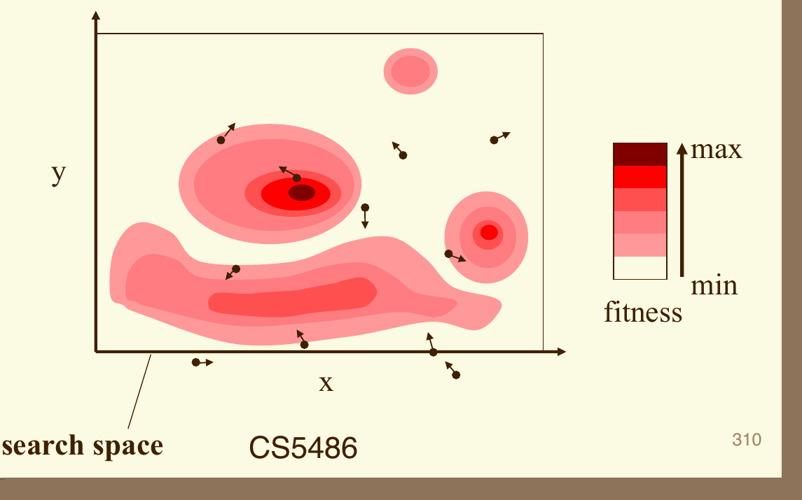
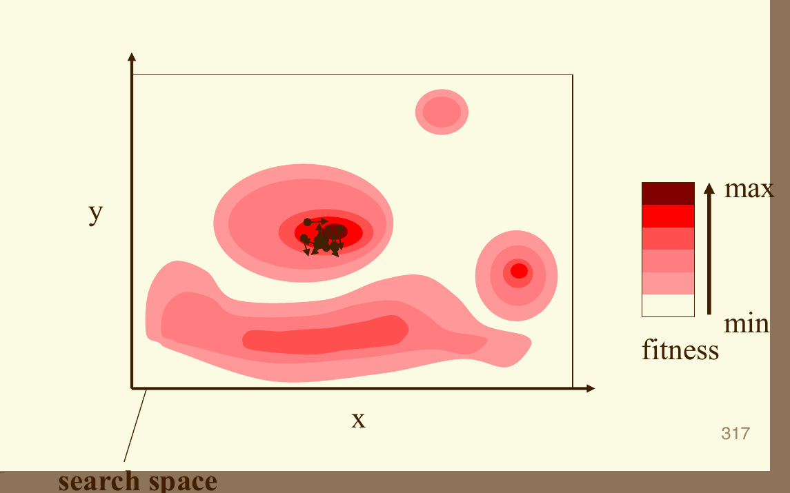
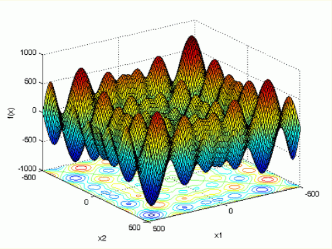
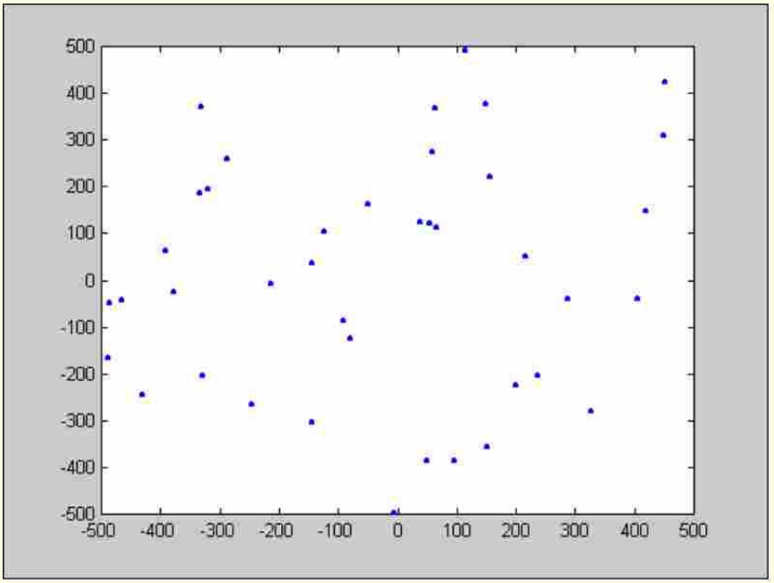
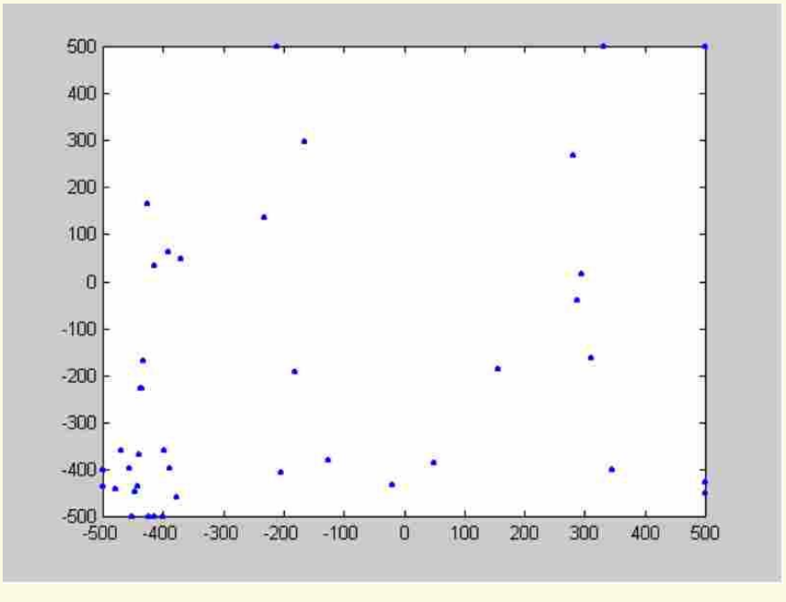
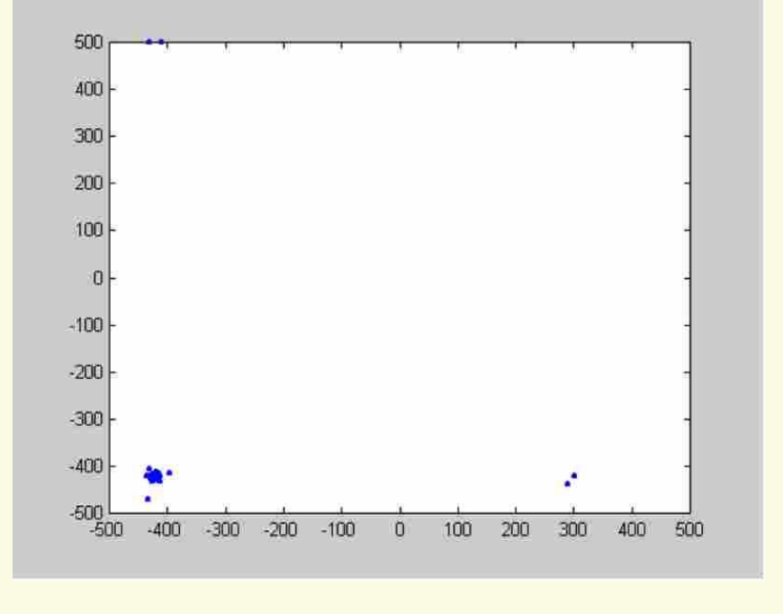
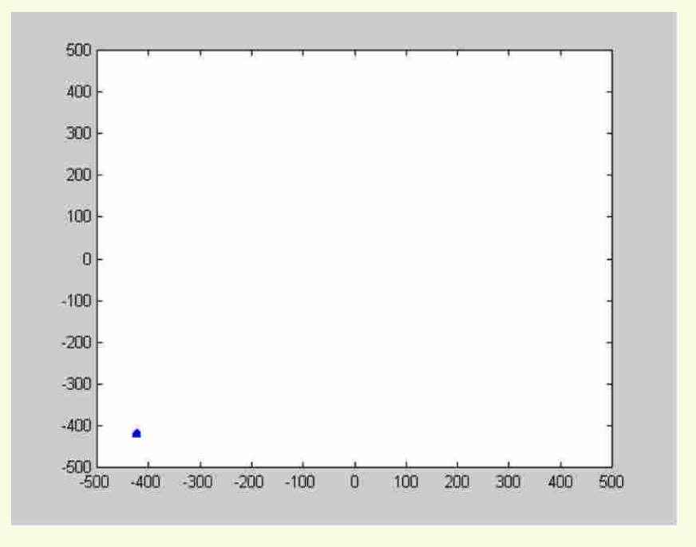
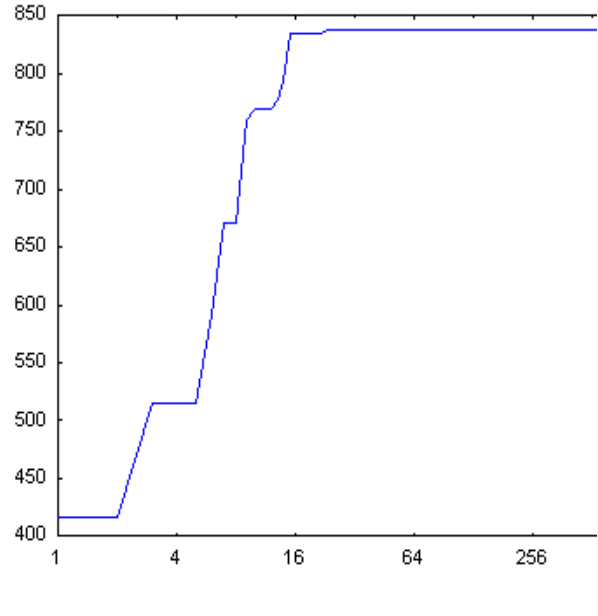

1 · 本周要解决的问题
只能试出一组参数的好坏，却不知道该往哪个方向改：一群会记住经验、会交流的搜索点，怎样帮助我们找到更好的参数？
本周学习 Swarm Intelligence（群体智能），主角是 Particle Swarm Optimization（粒子群优化，PSO）。你将先把“粒子飞行”的比喻翻译成变量和计算，再完整算一轮搜索，最后阅读课件中的多峰函数实验。课程整合放在这条主线之后，用来回答“面对实际任务，该选模型还是选优化器”。
- 区分当前位置、速度、个人历史最好位置、邻域最好位置和全局最优解。
- 解释惯性、认知、社会三项；按粒子、维度、迭代分别采样随机数。
- 手算二维粒子的一轮速度、位置、pbest 与 gbest，并说明更新顺序。
- 读懂 Schwefel 函数的符号、搜索域、分布图、结果表和收敛曲线，判断证据的限度。
- 比较 GA、PSO、SA、Hopfield 优化，并为 NN、SVM、模糊推理与搜索优化任务作初步选择。
阅读边界：主资料为 Lecture_slides_full semester.pdf，实际第 299–324 页。299–323 是教学内容；324 是结束页，仅登记。本文所有页码均从 PDF 第一页起计，不是页脚的 303–328。没有 PSO 专题 Tutorials；前序概念在下文补齐，不需要打开旧教材。公式与图片已内嵌，离线可读；小屏上的宽公式、表格与向量图可在各自区域左右滑动。
标识约定：“原资料内容”指可追溯的课件定义、图示或记录；“教学补充”指为理解而增加的解释、算法约定或自拟例子；“经核实的澄清”有原图、代数或外部查证依据。未确认的实验设置列在末尾“资料限制”。评级表示学习依赖：5/5 核心基础、4/5 重要方法、3/5 理解支撑、2/5 局部拓展、1/5 背景补充，不表示考试概率。
2 · 够用的前置知识
Objective function（目标函数）：先约定什么叫“更好”
前置补充。假设你调节机器的两个参数：转速与压力。一次实验给出耗电量，目标是让它尽可能小。参数组合是 Candidate solution（候选解）；把参数送入后返回一个评价数值的规则是目标函数。Search space（搜索空间）规定可以试哪些参数；能满足约束的参数构成 Feasible set（可行集合）。
这里 是一组决策变量， 是允许的候选解集合， 把一个候选解映射为一个实数。符号 min 表示找最小值；求得的位置记为 ，对应的数值才是 。位置与分数是不同对象，不能把一个分数代入位置更新式。
Global optimum（全局最优）是在整个允许范围内最好；Local optimum（局部最优）只要求附近没有更好的点。丘陵地形中，一个山谷可能比附近低，却不是整片地形的最低处。有限次搜索找到的“最好点”只是已探索样本中的最好，除非另有证明，不能加上“真正全局最优”的结论。
若成本在 A、B 两点分别为 8 与 3，最小化选择 B。若算法接口要求 Fitness（适应度）越大越好，可定义 ，于是两点得分为 −8、−3，最大化仍选择 B。取负会反转排序；不会把候选解的坐标取负。
arg min 与 arg max 返回实现最好值的位置集合，不是函数值。本教材手算统一最小化；读课件的正值结果表时，会明确保留原表的得分标签。
前置补充；与主课件第 306–314 页的 fitness 图及函数定义衔接。取负排序关系可直接由不等式核对。
Position / Velocity vector（位置／速度向量）：一组参数怎样移动
前置补充。二维位置 表示第一参数为 2、第二参数为 1；不是两个粒子。若该点移动了 ，新位置就是 。位置的每个分量对应一个决策变量；一个 Particle（粒子）代表一份完整方案。十个参数的问题中，一只粒子就需要十维位置。
是粒子编号（1 到 ）， 是问题维度， 是某个维度的编号（1 到 ）， 是迭代编号（0、1、2……）。上标 表示时刻，不是幂。 是粒子总数，与 无关。 表示含有 个实数分量的向量空间。
在 PSO 中，velocity 是一次迭代建议的位移，并非必须具有真实物理速度。把一步的时间间隔取为 1 后，位置与速度可直接相加。若第一个参数以转／分钟计、第二个以压力单位计，各分量保留各自的单位，不能把不同维度当作可直接比较的同一种物理量。
后一个差向量的意思是“从当前位置出发，第一维减 1，第二维加 2，就到达参考点”。PSO 用这种差向量产生吸引，而不需要目标函数的导数。
前置补充；主课件第 301、303–304 页。
Random number / Iteration record（随机数／迭代记录）：变化与记忆
前置补充。 表示从 0 到 1 的均匀分布采样：等长子区间有相等机会。它是一项产生新数值的操作，不能在所有步骤中固定写成 0.5。0.5 是其均值，不是每次抽到的数。手算题列出固定随机数，是为了让答案能复核；实际运行中应按约定不断取样。
Independent sampling（独立采样）指某次抽到较大值，并不强迫另一项也抽到较大值。给定相同初始状态、参数、采样顺序与 Random seed（随机种子），伪随机实现可以重复同一运行；只记录一个 seed 却改变循环顺序，通常不能复原原来的轨迹。
每次迭代要分清“此刻在哪里”和“到目前为止哪里最好”。例如某粒子的目标值先后为 5、2、4，当前位置的值是 4，历史最好值仍是 2，最好位置也仍是取得 2 的那个位置。第三步可以变差而不删除第二步的经验。这正是 PSO 记忆机制的基础。
前置补充；主课件第 303–305 页的最好经验与循环内随机性。
Stochastic / Population search（随机／种群搜索）：接上第 9、11 周
简短回顾。第 9 周的 Simulated Annealing（模拟退火，SA）通常从一个当前方案出发，提出邻近方案，再决定是否接受。即使新方案较差，也可能接受：这给搜索越过局部障碍的机会。温度控制这种接受的宽松程度，逐渐降温后越来越偏向改进。
第 11 周的 Genetic Algorithm（遗传算法，GA）同时保存一个种群，对编码后的候选方案进行选择、交叉与变异。不同个体让搜索从多个地方开始；选择传播较好方案的信息，交叉重组编码，变异引入新的变化。但种群也可能变得相似，从而过早失去探索能力。
PSO 继承“多个候选方案同时搜索”的思想，却把主要更新机制改成连续位置的运动与经验共享。本周基本 PSO 保留粒子的身份和个人记忆，不靠复制淘汰、交换染色体片段来更新。三者共同需要评价函数；随机性出现的位置和保存的状态不同。
来源：Lecture_slides_full semester.pdf，PDF 实际第 223–224、229 页。280–286、295。
现在已经有候选解、比较规则、位移和记忆。接下来把这些对象放进同一个粒子，再看粒子之间究竟交流什么。
3 · 从群体启发到可计算的状态
Swarm Intelligence（群体智能）：简单个体如何共享线索
原资料内容与解释。课件把群体智能描述为简单个体与其他个体、环境相互作用所产生的群体行为。PSO 将“自己试过的好位置”和“同伴试过的好位置”同时用于下一步运动。想象一群人在陌生区域寻找好地点：每人保留自己的经历，也会参考他人的发现；他们不必预先知道整张地图。
这里的“智能”来自反复评价、记忆和传播信息的组合。粒子并不懂物理意义，也不会凭直觉知道目标曲面；它只能在到达的位置获取评分。课件还将 Ant Colony Optimization（蚁群优化，ACO）列作群体智能的另一个代表。本周仅认识这个例子，不展开其独立算法。
来源：Lecture_slides_full semester.pdf，PDF 实际第 299–301 页。
Historical context（历史背景）：两个时间点
第 299 页将群体智能术语关联到 Gerardo Beni 与 Jing Wang 在 1989 年的 cellular robotic systems（细胞机器人系统）研究语境。第 301–302 页介绍 James Kennedy 与 Russell Eberhart 于 1995 年提出 PSO，并展示两位研究者。社会行为是启发来源，实际算法仍要由精确的状态与更新规则定义。
来源：Lecture_slides_full semester.pdf，PDF 实际第 299、301–302 页。
Personal best / Neighborhood best（个体最好／邻域最好）：记住的是位置
第 303 页的图以当前位置 为出发点，用 指向自己的最好经历，用 指向邻居的最好经历，并画出已有速度 。为避免原图下标的多重用途，本文把第 只粒子的个人最好位置统一记为 ，邻域最好位置记为 。
| 对象 | 含义与维度 | 不能混同的对象 |
|---|---|---|
| 当前方案， 维位置 | 当前函数值 是一个标量 | |
| 保留的运动方向与步长， 维 | 不是目标值，不是梯度 | |
| ，pbest | 粒子 到时刻 见过的最好位置， 维 | 不是它每一步的当前位置 |
| ，lbest | 该粒子的信息邻域内最好的历史位置， 维 | 不一定是坐标距离最近的粒子 |
| ，gbest | 整个群体见过的最好位置， 维 | 不是未知的真实全局最优 |
设 为粒子 能接收信息的粒子编号集合；在本文约定中包含它自身。最小化时，从邻居的个人最好记录中挑出目标值最小的一份：
是被比较的邻居编号， 是获胜记录所属的编号； 是全体粒子共用的目标函数。并列时可以固定选编号最小者。取出的是那只粒子的历史好位置，不是它当前正在飞行的位置。
教学补充。若每只粒子都参考全体，所有邻域最好位置相同，即 ，这就是本文手算使用的 gbest 版本。若只参考固定环形相邻个体等较小信息集合，就是局部邻域版本。信息传得广，群体可能更快靠拢，也可能过快追随一个局部好点；较小邻域可能保留不同搜索方向，但没有“必然更优”的排序。第 303 页说的是邻居最好，不能不加说明就把它等同于全体最好。
三只粒子的历史最好目标值为 9、2、5，整个群体的 gbest 来自第二只粒子。若第一只粒子只连接第一、第三只，其 lbest 来自第三只，分数为 5。两者没有矛盾：比较范围不同。即使群体最好值是 2，未访问的位置仍可能有值 0。
来源：Lecture_slides_full semester.pdf，PDF 实际第 303、305 页。邻域记号和并列规则为教学补充。
记忆告诉我们“向哪里参考”，但不直接决定“下一步走多远”。三项速度更新把过去方向、个人经验和社会经验结合起来。
4 · 一轮 PSO 怎样发生
Velocity / Position update（速度／位置更新）：三项共同决定下一步
原资料内容，统一记号。给定一轮开始时的状态，逐粒子、逐维度计算新速度，再用新速度移动位置：
第一式生成新位移，第二式执行该位移。 指粒子， 指维度， 指迭代； 分别是上一节位置、速度、个人最好、邻域最好的相应分量。使用 gbest 版本时，把 替换为 。各分量式算完后组合成 维向量。
| 参数／随机量 | 作用与条件 |
|---|---|
| ，Inertia weight（惯性权重） | 上一速度保留多少。无量纲；本章直观解释采用非负值。取 0 会移除惯性，但不移除两项吸引。 |
| ，Cognitive coefficient（认知系数） | 个人经验的吸引强度；非负、无量纲。为 0 时不受 pbest 吸引。 |
| ，Social coefficient（社会系数） | 邻域经验的吸引强度；非负、无量纲。为 0 时停止这一渠道的信息共享。 |
| 两项独立的 随机数；对每轮、每粒子、每维重新采样，都是无量纲标量。 |
三项都具有同一维度分量的位移单位：旧位移乘无量纲权重，加上“好位置减当前位置”的距离乘无量纲系数，才可以相加。PSO 不是由某个力学定律严格推导出的必然最优轨迹；这是把三类信息结合起来的搜索规则。参数影响搜索行为，课件没有给出这次 Schwefel 实验的具体参数，不能把手算的参数写成原实验设置。
原图写出 、 与 。原页的文字循环与公式下标不够统一。本文明确令 为粒子、 为维度， 为个人记忆， 为社会参考。
若 rand 表示在给定区间均匀抽样，且 ，则 。因此用 、、 就得到上面的形式。 均按数值系数解释； 标识两项。这里是代数合并，不是把原页的 β 丢掉，也不是宣称不同文献的参数名称总是相同。
来源：Lecture_slides_full semester.pdf，PDF 实际第 304 页。记号与均匀随机变量转换为经核实的澄清。
Inertia / Cognitive / Social terms（惯性／认知／社会项）：看懂三根箭头
先从当前位置画出保留下来的旧速度，这是 Inertia term（惯性项）。再画出朝个人好位置的位移贡献，这是 Cognitive term（认知项）。最后加入朝社会参考位置的位移贡献，这是 Social term（社会项）。三个向量相加可以把第二根箭头的起点平移到第一根终点，再把第三根接上；平移箭头不改变向量。
图中认知项来自差向量 ，社会项来自 ；两者都以旧位置计算，不能因为作图时首尾相接，就把社会项误算成“从认知箭头终点指向社会最好”。实线箭头表示已加权的实际贡献；虚线只标出参考位置的方向。
这也解释了为什么粒子可能越过某个好位置：它还有惯性，两个吸引可能叠加，系数也未必让总位移落在当前位置和最好位置之间。因此“朝好经验学习”不等于“每一步函数值都改善”。即使落在两好点之间，多峰函数的中间区域也可能更差。
固定随机数和差向量时，增加 只会放大本轮的旧速度贡献；不能据此推断整个算法必定探索更好。增加 会强化个人经验，增加 会强化共享经验；太强的拉动可能带来跨越、震荡或快速聚集。将这些视为有条件的行为解释，不是通用参数保证。
来源：Lecture_slides_full semester.pdf，PDF 实际第 303–305 页。图为教学示意图，非实验轨迹。
Randomness inside the loop（循环内随机性）：逐维随机会改变方向
第 304 页的红字明确强调 Randomness inside the loop，对应“每个时间步 → 每只粒子 → 每个分量”。这里统一采用每个 都抽取两次随机数。若 只粒子、 个维度，一轮速度更新用到 个数；初始化的随机数另算。
向量写法更紧凑，但必须用逐分量乘法：
与 都是 维随机向量， 是 Elementwise product（逐元素乘积）：第一维乘第一维，第二维乘第二维。结果仍是 维向量，不能换成会输出一个标量的内积。
只考察一个吸引项。设当前位置为 ，参考点为 ，系数为 1。若整条向量共用 ，贡献为 ，沿原方向的半程。若逐维抽到 ，贡献为 ：它仍朝参考点的各分量调整，却不在原来的连线上。
先看左图线段，再看右图矩形：共用一个数只能缩放整根箭头；逐维独立抽样可以改变各坐标方向贡献的比例。右图展示单个吸引项、系数为 1、两个差分量均为正的支持区域；不表示完整 PSO 的新位置必在此矩形内。差分量有负号时区间方向随之改变；还要加上另一吸引项与惯性项。
若同一粒子的所有维度共用一对随机数，维度之间会产生耦合；若全体粒子还共用这一对数，粒子之间的随机拉动也会相关。不同方式可能形成不同轨迹，不能声称某一种总是更好。第 305 页的 Random Proximity 阴影帮助理解方向的随机范围，但阴影本身不是成功概率图。
原资料：Lecture_slides_full semester.pdf，第 304–305 页。向量写法另与 MathWorks 的 PSO 算法文档核对；本例与支持区域解释为教学补充，未引入该软件特有的自适应邻域规则。
Synchronous iteration（同步迭代）：冻结、移动、评价、再记忆
教学补充：本文约定的完整 gbest 版本。第 304 页给出速度与位置更新，但没有完整规定群体记忆刷新时机。为了可以逐行复算，本文固定同步方式：这一轮所有粒子都参考轮开始时的记忆，整轮的新位置评价完后才发布新 gbest。
- 初始化。给定目标函数、搜索域、粒子数、参数和预算。生成可行位置及初始速度，计算每只粒子的目标值，把初始位置复制成它的 pbest。比较所有 pbest，得到初始 gbest。
- 冻结旧状态。保留本轮开始的 ，以它们计算所有新速度。每粒子、每维分别抽两数。
- 移动并处理约束。使用新速度求出每只粒子的新位置；若越界，按预先规定的策略修正，再评价。不能评价一个方案，却记录另一个方案的位置。
- 刷新个人记忆。若新位置严格优于该粒子的旧 pbest，则替换；否则保留。并列时本教材保留旧记录。
- 刷新群体记忆。从全部新 pbest 中选最好者为下一轮 gbest，记录位置、函数值和迭代号；预算未用完且停止条件未满足，就再做一轮。
分段公式第一支选新位置，第二支保留旧位置； 是本轮所有个人最好记录中的获胜编号。最大化时将比较符号改为大于，并把 arg min 改为 arg max。上述写法假设目标函数固定、同一点的评价可比；带噪声的评价需要另行设计重复测量和记录规则，不在本周展开。
给定 f、边界、N、D、ω、c1、c2、随机种子与迭代预算
初始化 X、V；计算 f(X)；P = X 的独立副本；g = P 中最好的位置
每一轮：
保存本轮旧 X、V、P、g
对每只粒子 i：
对每个维度 d：
r1 = 新的均匀随机数；r2 = 新的均匀随机数
Vnew[i,d] = ω·V[i,d]
+ c1·r1·(P[i,d] - X[i,d])
+ c2·r2·(g[d] - X[i,d])
Xnew[i] = X[i] + Vnew[i]
按已声明的策略处理边界，再计算 f(Xnew[i])
对每只粒子，比较新值与旧 pbest 值，生成 Pnew
从 Pnew 中挑选下一轮 g
提交新状态并记录；满足停止条件则返回 g 及 f(g)这里代码中的 X、V、P 是分别保存各粒子位置、速度、个人最好位置的 表；g 是 维向量。P 必须保存独立副本：若它与 X 指向同一块可变数据，移动 X 会连旧经验一起改掉，记忆机制便失效。
Asynchronous update（异步更新）也可以作为算法约定：前一粒子改进后马上更新共享信息，后一粒子随即使用。但它与本章同步规则可能算出不同结果；应明确声明，不能在一道题中混用。“同步”只要求同一轮使用同一版信息，并不要求真的用多台计算机同时算。
来源：Lecture_slides_full semester.pdf，PDF 实际第 304 页。初始化、记忆刷新、同步约定与伪代码为必要教学补充。
Boundary handling / Stopping（边界处理／停止）：公式以外还要规定什么
教学补充。初始位置合法，不代表下一步合法。例如允许区间是 [−5,5]，当前位置 4.8、新速度 0.6，会产生 5.4。必须在评价前约定处理办法。本教材举例使用 Clipping（截断）：把越界分量放回最近的边界，并将向外的对应速度置零。
是第 维下、上界，；箭头表示赋值。上述例子截断成 5.0，并把这维速度变成 0。只改位置而不管继续向外的速度，下一步可能反复撞边界。反弹、重采样等也是可能的策略，但会改变轨迹；课件散点出现在边界上，不足以证明原实验采用了哪一种。
变量尺度也要合理。例如一个参数允许 0–1，另一个允许 0–10000，可先把它们都换算到 0–1 再搜索，并在评价前换回实际参数。这样初始速度和步长限制更容易解释；尺度变换不能代替正确设置可行约束。
常见停止理由包括：迭代／评价预算用完，或连续若干轮最好值改善很小。若每轮 只粒子都评价一次，初始化加 轮通常需要 次目标评价； 是完成的轮数，不是运行温度。昂贵仿真问题中，评价次数常比轮数更能表示成本。停滞只说明当前运行近期没找到改善，不能证明已经到达全局最优。
必要教学补充。截断并清零向外速度的实现例可参见 MathWorks 文档的 Iteration Steps 与 Stopping Criteria；这不是对课件实验代码的复原。
5 · 完整手算：两只二维粒子的一轮搜索
教学补充例题，不是课件 Schwefel 实验。我们最小化
是二维无量纲决策向量， 是非负标量。这里暂不写粒子下标时， 表示第一、第二维。函数在原点取最小值 0；我们知道答案，是为了检查算法的一步是否合理，粒子本身不接收这个答案。
设 ；使用全体邻域、同步更新、严格改进才替换记忆。初始状态如下，pbest 是此前搜索留下的有效历史记录，本轮不是初始化轮：
| 粒子 | 当前位置 | 旧速度 | 旧 pbest | 当前值／历史最好值 |
|---|---|---|---|---|
| A | (2,1) | (0.5,−0.5) | (1,1) | 5／2 |
| B | (−1,2) | (0,−1) | (0,1) | 5／1 |
比较旧 pbest：，所以本轮共享的旧 gbest 为 ，其目标值为 1。即使 B 当前在 (−1,2)，大家参考的仍是 B 曾经找到的 (0,1)。
| 粒子 | ：认知项 | ：社会项 |
|---|---|---|
| A | (0.4,0.8) | (0.6,0.2) |
| B | (0.2,0.6) | (0.4,0.8) |
步骤 1：算 A 的差向量与三项贡献
个人记忆减当前位置为 ；社会记忆减当前位置为 。第二维的两个参考点恰好都与当前位置同高，所以这维吸引项为零，与该维随机数大小无关。
例题中括号对表示二维向量，以上三项名称分别是惯性、认知、社会贡献。相加并移动：
新位置未越界。目标值为 。它低于 A 的旧历史最好值 2，说明 A 的个人记忆应改进。先记下这个结果，不在计算 B 前替换共享 gbest。
步骤 2：用同一个旧 gbest 算 B
B 的旧 pbest 与旧 gbest 都是 (0,1)，两个差向量均为 。参考位置相同，不意味着两次随机抽样必须相同。
新位置也未越界。目标值为 ，低于 B 的旧 pbest 值 1。
步骤 3：刷新 pbest，再选新 gbest
| 记录 | 比较 | 下一轮使用的位置 | 对应目标值 |
|---|---|---|---|
| A 的 pbest | 0.585 < 2，替换 | (−0.15,0.75) | 0.585 |
| B 的 pbest | 0.37 < 1，替换 | (−0.1,−0.6) | 0.37 |
| 群体 gbest | 比较 0.585 与 0.37，选 B | (−0.1,−0.6) | 0.37 |
旧群体最好值从 1 降到 0.37，确有改进。但它还大于已知最小值 0，因此这一轮没有得到真正最优解。B 的新第二维从 2 走过参考值 1 到了 −0.6，也具体展示了惯性与两项吸引相加后可能越过目标位置。
步骤 4：用更新顺序检查答案
若有人算完 A 后马上把 gbest 改成 (−0.15,0.75)，那么 B 的社会差向量将变为 (0.85,−1.25)，社会项变成 (0.51,−1.5)。B 新速度会是 (0.81,−2.9)，新位置为 (−0.19,−0.9)，目标值 0.8461。这个结果对应另一种信息刷新规则，不是本题声明的同步答案。
查看提示与完整解析
提示：移除社会项，不要移除惯性或认知项。新速度是 ，新位置是 。目标值为 。
3.285 虽然比当前的 5 好，却没有胜过历史最好值 2，因此 pbest 仍为 (1,1)。比较基准是旧 pbest，不是刚离开的当前位置。
教学补充，应用第 304 页更新机制；本例所有三项贡献、位置与函数值已独立复算。例题的同步规则、随机数和参数均已明确给出。
手算解释了一步，连续图展示许多步叠加后的群体行为。读图时要一直保留“当前位置会变差，历史最好只在发现改进时更新”这一区别。
6 · 把八张 Global Optimization 图读成一次搜索
Fitness landscape（适应度地形）：分散、聚集与信息传播
原资料连续图解。第 306–313 页是一组相同地形上的连续示意图，不是八种算法。先看横轴 x、纵轴 y：这是二维决策空间，不是时间。右侧色标从浅色 min 到深红色 max，表示此图在寻找较大的 fitness。黑点是当前粒子位置，箭头表达运动方向；箭头不是目标函数梯度。

实际第 306 页

实际第 313 页
先从左图的分散位置看起：一些粒子靠近不同区域，还没有形成共同方向。中间几页显示搜索开始集中在较好的区域，仍存在不止一团。右图则显示大部分粒子聚集在最深红区域附近。按照 PSO 机制理解，个体发现的好位置进入记忆，记忆通过社会项影响别人，其他粒子再去测试新的位置，形成反馈。
| 实际页序 | 原图可见的阶段 | 用算法解释时应抓住什么 |
|---|---|---|
| 306–309 | 粒子分散，方向各异；有粒子接近多个峰区 | 多个候选点在不同区域评价目标，旧速度与记忆共同决定移动 |
| 310–311 | 上方较深区域与下方长形区域出现聚集 | 吸引信息可使某些区域得到更多搜索，但群体暂未完全一致 |
| 312–313 | 粒子明显靠拢上方最深红区域 | 共享好经验可以促成集中搜索；图是一次成功趋势的示意 |
Exploration（探索）是尝试不同区域，Exploitation（利用）是在已知较好区域附近继续寻找改进。分散初始点和随机拉动可以支持探索，最好记忆的吸引可以支持利用，但三项之间不是一对一的永久分工：大的旧速度可能穿过好区域，随机项也可能把粒子拉得更集中。实际效果取决于当前状态、参数和地形。
图没有给出每轮编号、参数、完整坐标、随机序列、边界策略或拓扑，因此不能据图复原数值轨迹。它也没有证明从任何初值、任何参数都能到达红色最高峰。不要将这一组最大化示意直接当成下一节最小化 Schwefel 的原始实验。
来源：Lecture_slides_full semester.pdf，PDF 实际第 306–313，按同一搜索过程合并讲解 页。
Convergence / Stagnation（收敛／停滞）：四种“没有变化”
教学补充。“图上收敛了”可能指不同现象：粒子位置聚得很紧、速度接近零、历史最好值很久没更新，或目标值接近已知的理论最优。前三者都不是第四者的充分证据。比如所有粒子在同一个次优点，速度为零，个人与群体记忆也等于此点，那么两个差向量全为零；不管新抽到多少随机数，下一步仍不动。
是 维零向量；该式适用于本教材的基本更新规则，不额外加入重启或噪声扰动。这是一个直接反例：乘在零差向量上的随机数不能凭空制造探索。
若目标固定且按前文保留最好记录，最小化问题的历史最好值只会下降或不变：
是一轮结束后保存的群体历史最好标量。这个单调性来自“只接受更好的记录”的定义，不是说所有当前位置都越来越好。最大化时不等号反向。若曲线是当前群体平均值，它就不受这个单调性质约束。
查看完整解析
不能。它可能停在一个局部区域，也可能步长或多样性已经太小。可说明“本次运行在此预算内未继续改善”。若基准函数有已知最优值，可另外计算差距；对未知目标，应报告预算、可行性、重复运行结果及最好解，而非声称数学保证。
教学补充：从第 304 页更新式和最好记忆规则推得；用于限定第 306–313、323 页图示能支持的结论。
7 · Schwefel 示例：从公式读到实验记录
Schwefel’s function（Schwefel 函数）：先固定这一页的定义
原资料内容，已核对第 314 页原图。课件定义的函数为
是 维实向量， 是第 个坐标； 把各维贡献相加。绝对值 在平方根内部，使负坐标也能开实数平方根； 的输入按弧度计算。 是一个标量；课件用 表示维度，本文统一改为 。这是无量纲数值基准，不应凭空给坐标加上米、秒等单位。
每维允许 −500 到 500，二维时可行域是一个正方形；更高维时是各区间的笛卡尔积。由于正弦随着坐标绝对值的平方根起伏，搜索空间包含许多局部高低区域。对一个局部区域做出改善，不意味着已经来到最深的谷底。

图的水平两轴是 ，竖轴是 ；底面的曲线是等高线投影。读图时先看反复出现的峰谷，再看它们并非都同高／同深。图帮助认识多峰性；最优坐标与精确数值要依靠函数定义及核验，不能从透视图目测小数。
第 314 页列出最小点每维约为 −420.9687，最小值约为 −418.9829 倍维度：
表示此搜索域内的最优位置； 提醒这些坐标与函数值是四舍五入值。经核实的澄清：就这一页实际写出的正求和定义而言，负坐标与负最小值相容，不应擅自把坐标改成正的。
令 ，只代表这个正数。平方根部分在 与 处相同，前面的乘数变号，因此
二维结果是两个一维贡献相加。以课件舍入常数计算为 −837.9658；多出来的小数不意味着课件需要具有同样精度。这个代入验证了符号与数值的一致性，本身不单独构成全局最优的证明。
进一步对齐外部可靠定义：Simon Fraser University 的测试函数库实现了 。这是另一个减去本页函数、再加常数的版本。结合该库的最优信息与 的对称性，可核对本页负坐标最小化的说法。常见版本的名称相同，优化方向与数值却不能直接混用。
原资料：Lecture_slides_full semester.pdf，第 314 页。外部核验：SFU Schwefel Function及其原始 MATLAB 定义。H 是仅为对齐来源而定义的函数，D 仍为维度；对称性与数值为独立复算。
Swarm snapshots（粒子分布快照）：点聚在哪里，能说明什么
原资料读图。第 315–322 页依次展示初始化，以及 5、10、15、20、25、100、500 次后的分布。横纵坐标均覆盖约 −500 到 500，蓝色点标出二维参数位置；图中没有逐点标明目标值。不要把纵坐标当作 fitness。

Initialization（初始化） · 第 315 页

10 iterations（10 次） · 第 317 页

100 iterations（100 次） · 第 321 页

500 iterations（500 次，原标题） · 第 322 页
阅读上图时，先看初始化的广泛分布，再看 10 次时左下区域出现更多粒子；到 100 次时左下团已很紧，但仍可见远离它的点；标题为 500 次的图在约 (−420,−420) 附近形成紧团。这个位置与第 314 页的负坐标最小点相近，但从像素不能读出 −420.9687 的精度，也不能确认重叠处每一只粒子的确切状态。
| 实际页序／标题次数 | 观察与作用 |
|---|---|
| 315／初始化 | 展示搜索的多点起步；不能仅凭一张图确定采样分布或随机种子 |
| 316／5 | 点仍分散，边缘有点；边界附近的点不揭示具体边界处理代码 |
| 317–318／10、15 | 左下区域的群聚逐渐明显，仍保留其他位置的点 |
| 319–320／20、25 | 左下团更集中，但还有远离团块的点；当前位置不是统一等于历史最好 |
| 321／100 | 主团紧密，仍能看见远处点；“已经接近”与“全体完全重合”不同 |
| 322／500 | 图上可见的点集中于负坐标区域；只能按原标题登记为 500 次 |
跨图比较告诉我们这组图表现了搜索逐渐集中。原资料没有逐轮坐标或代码，无法逐点追踪“某粒子从哪飞到哪”；连线轨迹不能自行编造。第 323 页结果表另有 5000 次记录，与这张 500 次图的对应关系未说明，见资料限制。
来源：Lecture_slides_full semester.pdf，PDF 实际第 315–322 页。
Search results / Convergence curve（搜索结果／收敛曲线）：把读数和结论分开
原资料记录。下表完整保留第 323 页的 Iteration 与 Swarm best 数字。将原表报告值暂记为 ：它只是该页的得分，不擅自认定为第 314 页的 。原表最后的 Global = 837.9658 是参照值标签，不是算法额外执行了一轮“Global”。
| Iteration（迭代） | Swarm best（原表） | 837.9658 − 原表值 |
|---|---|---|
| 0 | 416.245599 | 421.720201 |
| 5 | 515.748796 | 322.217004 |
| 10 | 759.404006 | 78.561794 |
| 15 | 793.732019 | 44.233781 |
| 20 | 834.813763 | 3.152037 |
| 100 | 837.911535 | 0.054265 |
| 5000 | 837.965771 | 0.000029 |
| Global（原表参照） | 837.9658 | — |
这些报告值递增，20 次后的得分已接近表内参照，100 次后差距更小。末列只是用舍入后的显示参照做减法，不是与精确理论最优值之间的误差证书；尤其最后的 0.000029 不应称为“确切优化误差”。不能把舍入参照值与高精度公式值混在一起报告误差。

原曲线的竖轴大致为 400–850，与得分表的量级一致；横轴可见 1、4、16、64、256，等距离刻度呈倍数增长，所以应按对数式横轴刻度理解，不能把相等图上长度读成相等迭代增量。图没有完整轴标题和原始曲线数据，不从图的右端补造精确停止轮数。
阶梯上升表示在若干阶段发现了更好得分；水平段表示保存的最好记录在该段未改善，并非所有粒子都停住。后段看起来平坦，也可能掩盖小幅改进：纵轴覆盖数百单位，极小的变化在此尺度下难以辨认。不能凭曲线目测区分 837.911535 和 837.965771 的全部小数差异。
能得出的结论：这页报告的最好得分逐步提高并逼近它显示的参照值。不能得出的结论：PSO 在任意问题、参数或随机初始化下必然达到全局最优；也不能由此确认原实验到底最大化什么量。关于符号、500／5000 和复现实验所缺设置，统一保留在资料限制，不作为已确认的算法事实。
来源：Lecture_slides_full semester.pdf，PDF 实际第 323 页。差值为独立算术复核；曲线为原图裁取。
一次实验展示算法怎样搜索，不负责决定算法适合所有任务。最后把 PSO 放回课程整体：先问任务需要什么，再选择表示、学习或优化方法。
8 · 全课程整合：表示、更新与任务选择
GA / PSO / SA（遗传算法／粒子群／模拟退火）：随机用在哪里
先固定问题：“一组候选参数可以被评分，我要找较好的一组。”GA、PSO、SA 都可以用于这样的搜索，但它们维护的状态、提出新解的方法和所需表示并不相同。以下比较针对本课介绍的基本版本；不同变体不应无条件套用。
| 方法 | 候选解与保存的信息 | 如何产生变化 | 关键局限 |
|---|---|---|---|
| GA | 一个由染色体编码的种群；课件以字符串、位串及解码为重点 | 按适应度选择，交叉交换编码片段，低概率变异 | 编码与算子必须保留／修复可行性；种群也会早熟，评价预算可能很大 |
| PSO | 实数位置、速度、个人历史最好、社会参考位置 | 惯性延续加两种经验吸引；随机数调节各维贡献 | 基本向量公式适合连续参数；离散路线需另设计表示，且会停滞、越界或过早聚集 |
| SA | 一个当前候选解与温度；可另保存历史最好供最终返回 | 生成一个邻近候选，以温度相关概率接受较差候选 | 邻域与降温安排影响搜索；有限预算运行不能由“退火”二字获得全局保证 |
把某个策略调成实数参数时，PSO 的位置可直接代表这些数；把策略编码为一串离散选择时，GA 的表示可能更自然。这里的“自然”表示更新容易有意义，不表示性能必胜。SA 可以用于连续或离散方案，只要你能定义“附近的一个新方案”。选择时首先问：这个更新操作会生成什么候选解，它仍然合法吗？
为了明确 SA 与 PSO 的区别，回顾第 224 页的一种接受规则。最小化能量 时，设 ：
是接受概率， 是一个候选解的标量代价， 是新旧代价之差； 是温度参数，须与能量采用相容尺度，使指数内的比值无量纲。该指数式在 时计算，零温度只作极限理解；第 225 页另列另一种概率式，本周不把两种公式混用。
SA 从代价 10 的方案试到代价 12，。若 ，接受概率为 ；抽到均匀随机数 0.2 则接受，抽到 0.8 则拒绝。若 ，概率降至 ，更不愿意接受这次变差。
本章 PSO 没有用上述温度概率决定是否接受新位置：先根据速度移动，随后判断是否更新最好记忆。一个新位置较差，粒子可以在那里继续飞行，只是不覆盖 pbest。GA 的随机性则在选择、交叉和变异中发挥作用。这三种“随机”解决的是不同步骤的问题。
来源：Lecture_slides_full semester.pdf，PDF 实际第 223–225、229 页。280–286、295；303–305。对照例为教学补充。
Hopfield optimization（Hopfield 优化）：先把问题写进能量
前面三种方法可以通过评价接口询问候选解好坏。Hopfield network（Hopfield 网络）则把相互作用编码为网络权重，让神经元状态演化与能量变化关联起来。以课件离散模型为例，状态由若干个 −1／+1 变量组成；它们合起来表示一份方案。把目标与约束惩罚写进能量后，再选择对应的权重与输入。
这里 是网络的状态变量数， 是 维列向量， 是 权重矩阵， 是 维外部输入向量；上标 表示转置，使两个乘积都成为标量。该式对应第 198 页的离散能量结构，原页状态写作 v、外部输入写作 x；此处改名以免和 PSO 的速度、位置混淆。权重与输入决定能量的数值尺度。
课件第 184 页给出的稳定性充分条件包括： 对称、对角元素为零、一次只更新一个神经元的异步激活。同步更新可能出现二状态周期。因此这里的“异步”是神经元状态更新条件，不能与上一章 PSO 的群体信息刷新约定混为一谈。对通常保留零局部场原状态的离散更新，能量下降论证解释了稳定性；它并不证明抵达所有方案中的最低能量。
作为优化器，Hopfield 的难点是构造正确的能量模型。若约束用惩罚项加入，惩罚权重太小可能让不合法方案看上去代价很低；权重很大也不自动保证好解与易收敛。课件的连续模型也强调平衡与局部能量极小的关系。没有正确编码约束，网络稳定下来并不意味着原任务解决了。
| 比较点 | Hopfield 优化 | 本周 PSO |
|---|---|---|
| 表示 | 神经元状态；本节离散版为双极变量，另有连续版 | 一只粒子的实数向量即完整候选方案 |
| 更新依据 | 由权重和输入产生的局部状态作用，与能量结构相联系 | 旧速度、个人记忆与邻域记忆，通常无需梯度 |
| 主要建模工作 | 把目标和约束转成能量并配置网络 | 定义可评价目标、可行搜索域和边界／约束处理 |
| 结果限度 | 稳定性条件不能替代全局最优证明；可行性需检查 | 最好记录与聚集不能替代全局最优证明；可行性同样需检查 |
来源：Lecture_slides_full semester.pdf，PDF 实际第 178、184、198、207 页。与 303–304 页比较，符号统一和约束解释为教学补充。
Task → Model selection（任务 → 模型选择）：先问要输出什么
“预测新样本的类别”和“为机器找到一组低耗能参数”都可能用到优化，但交付物不同。前者需要学到一个输入到输出的映射，后者要找到一组决策变量。Neural Network（神经网络，NN）与 Support Vector Machine（支持向量机，SVM）可以学习映射；PSO、GA、SA 则主要回答候选方案怎样搜索。模型训练本身也包含优化，因此两层可以组合，但不能把它们视为同一种对象。
必要的短回顾：Multilayer Perceptron（多层感知机，MLP）用隐藏层的非线性组合表达复杂关系，Backpropagation（反向传播，BP）计算训练误差对权重的梯度；有表达能力不等于训练必找到理想权重。Radial Basis Function network（径向基函数网络，RBF network）则把与若干中心的距离转成局部响应，再组合成输出。两者的表示不同，却都需要评价对新数据的表现。
SVM 以间隔思想构造分类边界；Kernel（核函数）提供隐式特征空间中的内积，支持非线性边界。核与参数选择仍需验证，不能因为“最大间隔”就保证每个数据集效果最好。Fuzzy inference（模糊推理）则先把数值变成若干语言概念的隶属程度，再应用规则、汇总结果并去模糊化。它适合已有“偏冷则增加功率”这类知识的场景；隶属度描述程度，不自动等同事件发生概率。
| 任务与可用信息 | 候选方法 | 为什么匹配 | 首先检查的限制 |
|---|---|---|---|
| 有带标签数据，预测类别或数值；关系非线性 | MLP／RBF network | 学习输入输出映射，隐藏表示提供非线性能力 | 数据量、损失定义、训练与验证差距；逼近能力不是训练成功保证 |
| 有标签，构造分类边界；需要核相似度表示 | SVM；数值预测可考虑 SVR | 以间隔与核表示组织学习问题 | 特征尺度、核、正则参数与独立验证；SVR 是 Support Vector Regression（支持向量回归） |
| 有明确但边界模糊的语言规则，输出控制量 | Fuzzy inference system（模糊推理系统） | 把“偏冷／正常／偏热”等程度转成可计算的规则响应 | 隶属函数、规则覆盖与输出解释；隶属度不是置信概率 |
| 没有类别标签，想把高维样本组织到低维地图 | Self-Organizing Map（自组织映射，SOM） | 通过竞争学习形成特征地图，以便观察相似样本关系 | 地图邻近不是已知类别标签，也不代表分类正确率 |
| 不完整模式需要联想恢复，或能构造合适能量的优化问题 | Hopfield network | 状态演化到吸引子；优化时把目标写入能量 | 记忆干扰、伪吸引子；优化的可行性与局部极小 |
| 连续参数可被仿真评分，导数难取得 | PSO；也可比较实数搜索或 SA | 位置与速度直接作用于实数向量，评价接口足以驱动搜索 | 每次评价成本、尺度、边界、多次运行的差异 |
| 离散结构／选择串，需要重组多个候选 | GA | 按任务设计编码、选择、交叉与变异 | 生成的后代是否合法；顺序、唯一性等约束要保留或修复 |
| 能方便提出相邻方案，希望用单个当前状态探索 | SA | 温度允许阶段性接受变差，跨越局部障碍 | 邻域覆盖、降温速度与评价预算 |
这张表给出的是选择起点，不是性能排行榜。任务若有可用的数学结构与可靠专用求解器，也应先检查它们；“智能优化”不是忽略问题结构的理由。
前序原课件概念：第 92、101、113、115、118 页（NN）；133、145、152–155 页（SVM／SVR）；178、184–185、194–198 页（Hopfield）；234 页（SOM）；245–246、264、268–271 页（模糊推理）。搜索器来源见前两块。表中的任务场景与选择论证为教学补充，不代表课件给出方法优劣排名。
Model + Optimizer（模型加优化器）：层次组合而非互相替换
假设已经决定用 SVM 做设备故障分类，但还要选择正则参数和核宽度。SVM 是产生分类预测的模型；PSO 的粒子表示一组超参数，不是一个设备样本，也不是一个预测标签。每评价一只粒子，要用这组超参数训练 SVM，再在验证数据上得到错误率，作为要最小化的标量。
完整顺序是：先划分训练／验证／最终测试数据；PSO 提议超参数；用训练集拟合模型；用验证表现评价粒子；重复搜索；最后固定方案，才用未参与选择的测试集作一次最终评价。训练集用于学习权重／边界，验证集用于比较配置，测试集用于检验整个选择过程的结果，三者角色不同。
为什么不能反复用测试集给粒子评分？因为 PSO 正在根据那些分数选择参数，测试数据的信息就进入了选择过程，之后的测试表现不再是独立检验。也不能只说“PSO 迭代 100 次很便宜”：每个粒子的评价可能包含一次或多次模型训练，主要成本在这里。
同样的层次可用于模糊系统：规则结构可以先由知识确定，再搜索隶属函数的参数；必须保留参数范围和规则意义。或者直接搜索某 NN 的权重，但基本 BP 已能利用梯度时，不能无理由假定种群搜索一定更有效。
教学补充场景；原课件第 101、113 页（训练与表示的区别）、152–153 页（核与参数验证）、268 页（模糊推理流程）、301–304 页（PSO 位置表示）。数据划分与选择层次是为正确应用这些概念补充的解释。
9 · 练习与讲解答案
以下均为教学补充题。先遮住答案，用本教材已解释的状态和规则作答。它们检验本周核心与少量跨周连接，不预测考试题型。
PSO checks（PSO 理解检查）：随机、记忆与预算
4 只粒子、3 个参数，采用本文采样规则，一轮更新需要多少个随机数？若一轮只抽两个并用于全部粒子和维度，公式数值仍能算，但什么改变了？
查看完整解析
需要 个，分别用于每个粒子每个维度的认知项与社会项。不包括初始化采样。只抽两个仍能算出速度，但相同随机系数同时支配所有维度、所有粒子，引入共同随机拉动；它已不是本章规定的独立逐维采样。即使某个差向量为零，对应项不影响本次数值，规范采样顺序仍应保持清楚，以便复现。
某粒子当前目标值 6，个人历史最好值 2；新位置值为 3。是否移动到新位置？是否替换 pbest？全群体历史最好能否从 1 变成 2？
查看完整解析
按本章基本 PSO，在完成边界处理后会移到新位置；没有 SA 式接受检验。新值 3 没有优于个人历史最好值 2，因此保留 pbest。全群体历史最好不能从 1 变成 2，因为旧的值 1 仍在某个个人历史记录中，只会被更小的值替代。这个结论依赖固定、可比的目标评价和正确保存记忆，不能不加处理地套到带测量噪声的记录。
PSO 用 30 只粒子，完成初始化及 100 轮；SA 初始化一次后每轮评价一个新候选，也运行 100 轮。仅以“都是 100 轮”比较计算成本合适吗？
查看完整解析
不合适。若没有缓存、重试或额外评价，PSO 是 次评价，SA 是 次。公平实验应统一总评价预算或实际耗时，并报告初始化与停止规则。对随机方法还应比较多个随机种子的结果；一次最好值只是一次运行的证据。
Integrated problems（跨周综合题）：从任务到可检验方案
你要做房间温控系统，现有：（a）“略冷时增加功率”的专家规则；（b）带标签的历史故障数据；（c）可评估控制参数耗电量的仿真器。为三项需求各选课程内的一类方法，并解释 PSO 可以放在哪一层。
查看完整解析
（a）模糊推理：把温度映射到“冷”的隶属度，用规则产生控制建议，再去模糊化输出功率。（b）NN 或 SVM：从标签数据学习故障分类映射，具体选择要比较独立验证表现。（c）PSO 等搜索优化方法：粒子表示控制参数，仿真器给出耗电量，按约束寻找低耗能参数。
PSO 还可作为外层优化器调分类模型的超参数或模糊系统参数，但它不自动提供分类模型，也不自动生成可信的专家规则。隶属度 0.7 表示语言概念的匹配程度，不能直接说成故障概率 70%。
一条路线必须恰好经过每个站点一次。有人建议把路线写成一个数字向量，直接套用本章 PSO；另一人用 GA 普通交叉交换片段；第三人说 Hopfield 一旦稳定就必为最短合法路线。逐项指出需要补充的工作。
查看完整解析
路线是排列，向量分量相加后可能出现小数或重复站点；基本连续 PSO 不直接保留排列含义，必须另设计编码／解码和可行性处理，本周不展开离散 PSO。GA 也不能因用了“染色体”就自动合法，普通片段交叉可能产生重复或漏站，需要适合排列的算子或修复机制。
Hopfield 要先用能量正确编码“每站一次”和路线代价，并设置约束惩罚；还须检查所得状态是否可行。稳定性只涉及网络动力学，不保证它是全体合法路线中最短的一条。三者共同的第一步是明确候选解表示及可行约束，而不是先运行算法再替无效结果找理由。
某 MLP 在训练集误差很低，在验证集却很差。另一 MLP 连训练误差都很高。能否把两者都诊断为“PSO 不够强”，直接增加粒子数解决？
查看完整解析
不能。第一种暴露的是对新数据的表现问题，应检查数据划分、模型复杂度、正则化与训练数据代表性；把训练误差再压低不保证验证更好。第二种要检查模型表示、特征、训练规则和优化是否有效，不能只由一个误差数字断言原因。
如果 PSO 用于外层调参，其目标应匹配预定的验证任务，且要有合理预算。增加粒子数增加搜索与评价成本，不能修复错误标签、泄漏数据、缺失的模型能力或不正确目标。第 113 页“存在近似权重”和“算法找到这些权重”本就不同；找到低训练误差与获得良好泛化也不同。
教学实验明确声明最小化本章第 314 页定义的二维 f，并报告 的历史最好 fitness 为 837.9。它对应的 f 值是多少？若没有声明 ，能不能直接对课件第 323 页这样换算？
查看完整解析
在题目明确给定 时，。变换的是评价值，不是位置坐标；二维最小点仍应按 f 的定义判断。这个教学实验的条件足够，所以换算成立。
课件第 323 页没有给出这种定义，也没有实验代码。其正值与相邻页负坐标分布可以促使我们检查符号，却不能替代定义声明。因此只能报告原表值、指出缺少的对应关系，不能将假设的换算作为已核实的课件事实。
练习依据：本文第 2–8 章；对照主课件第 113、184、198、223–224、268、280–286、303–305、314、323 页。题设新增的条件与数值均已标为教学补充。
10 · 来源索引与资料限制
本周事实来源以主课件为核心。开始写作前已递归盘点资料根目录与子目录：共发现 24 个文件，包括 10 份原始 PDF、10 份已生成教材、1 份生成提示词、1 个空锁文件及 2 个系统元数据文件。没有发现压缩包、课堂音视频或 Transcript（课堂转录）；因此不存在可用转录补充，也不以旧教材代替原始证据。
| 相对路径／文件 | 内容核查与本周用途 |
|---|---|
| Lecture_slides_full semester.pdf | 324 页。采用实际 299–324 页；全部提取并查看渲染图。前序只取下表所列必要概念，不重写全学期。 |
| course_files_export/CS5486-2026.pdf | 2 页课程说明，已读；用于核对课程领域与目标。评分比例不作为知识重要性评级依据。 |
| course_files_export/TLU.pdf | 21 页 Threshold Logic Units，核查主题与结构；属早期阈值神经元，不作为本周独立教学来源。 |
| course_files_export/Nature1986.pdf | 4 页扫描文献，含相邻文章片段与反向传播文章；提取核查内容，非 PSO 材料。本周 NN 回顾引用主课件，不引入扫描文本的错接片段。 |
| course_files_export/ASSPM-Lippmann1987.pdf | 19 页神经网络综述；主题核查后排除本周详读整合，避免扩写早期网络课程。 |
| course_files_export/CS-Broomhead-Lowe1988.pdf | 35 页多变量插值与自适应网络论文；主题核查后不作本周独立来源。RBF 简短回顾定位主课件。 |
| course_files_export/Tutorials/Tutorial 1.pdf | 39 页智能系统与 AI 历史；无 PSO 专题，不把历史资料扩写进本周。 |
| course_files_export/Tutorials/Tutorial 2- M-P neuron.pdf | 36 页 M-P neuron；本周无须重讲逻辑神经元练习。 |
| course_files_export/Tutorials/Perceptron_Adaline.pdf | 18 页 Perceptron 与 Adaline；无本周算法或勘误，不作 PSO 事实来源。 |
| course_files_export/Tutorials/Tutorial 7 - SVM and LS-SVM_1.pdf | 21 页 SVM／LS-SVM 教程；已核查主题，无 PSO 专题。本周只用原课件的必要 SVM 概念作整合。 |
| CS5486-Week01-学习教材.html 至 CS5486-Week10-学习教材.html（01、02、03、04、05、06、07、08、09、10） | 10 份既有派生教材，全部排除独立事实来源；没有用旧教材替代原课件。原文件保持不变。 |
| CS5486-12周教材生成提示词.txt | 任务提示与边界，非学科事实来源。 |
| .writer.lock；.DS_Store；course_files_export/.DS_Store | 空锁文件与系统元数据，无学习内容，排除。 |
“主题核查”表示提取文件并检查其内容与结构来判断相关性，不等于全文教学采纳。工作提取文本、页面渲染、计算核验与本教材自身均属派生产物，不增加独立证据。
| 页序 | 可靠内容与去向 |
|---|---|
| 299–302 | 第 3 章：群体智能、PSO 问题背景、粒子与社会经验、历史。ACO 仅作代表举例。 |
| 303–305 | 状态、更新与随机采样、手算：图、公式、循环层次均核查；记号统一，算法补充明确标识。 |
| 306–313 | 第 6 章：作为一组连续过程讲解，不拆成八个重复知识点，不赋予全局成功保证。 |
| 314 | Schwefel 定义：公式、搜索域、曲面、最小坐标与值，核对符号并代入复算。 |
| 315–322 | 分布快照：初始化与全部标题次数合并解读，重点辨明坐标轴、负坐标聚集和观察限度。 |
| 323 | 结果表与曲线：保留原数值、读横轴尺度与平台；实验目标定义与次数对应仍有限制。 |
| 324 | 课程结束语，已阅读并登记；不包含新的理论内容。 |
| 223–224、229；280–286、295 | 前置回顾与搜索器比较：只取 SA 接受机制、GA 表示与操作。225 页仅用于标明另有概率规则。 |
| 92、101、113、115、118；133、145、152–155 | 模型选择：NN 的表示／训练，SVM 的间隔、核与验证；无整套前序推导。 |
| 178、184–185、194–198、207；234；245–246、264、268–271 | Hopfield 比较与任务表：能量、联想记忆、SOM、模糊推理所需的简短概念。 |
Evidence limits（证据限制）：哪些已查清，哪些仍未知
- 第 304 页随机数和符号：已查清。原图确实标出循环内随机性，公式两项 rand 前有 β。本文保留其代数作用，以 对齐。每粒子每维两项独立采样是本文统一使用的明确约定；未声称还原了缺失的原实验代码。
- 第 314 页的负号：已查清。原公式为正求和，给出的最小坐标为负。代入和外部变体对齐支持其内部一致性；不能按另一个 Schwefel 定义把它改为正坐标。教材使用近似号标识课件舍入常数。
- 第 323 页的正得分：对应关系未确认。正的递增 Swarm best 不能直接作为第 314 页 f 的最小值。对同一负坐标最小化过程，报告取负 fitness 在代数上可相容；但资料没有定义 F，也不能排除另一目标约定或不同实验。外部函数库只能核对函数变体，不能证明本地实验用了哪种变体。因此正文保留原表得分，不把任何猜测写成已知事实。
- 500 与 5000：原字样已查清，关系未确认。第 322 页标题为 500 iterations，第 323 页末次数为 5000。两页可以是不同观测时刻，也可能存在笔误；缺少代码或原始日志，不能选定解释。图与表不强行合并为同一轮结果，曲线右端也不用于补定准确次数。
- 原实验不足以精确复现。未提供粒子数的明确文字、完整初始坐标与速度、系数、随机种子、邻域、边界处理和每次运行原始数据。图上点数可能重叠，不能拿像素计数补参数；不据一次示例声称普遍成功率或性能排名。
必要外部查证仅用于定义与实现形式核对：SFU Schwefel 函数代码明确加常数与负求和的变体；MathWorks PSO 文档用于逐分量随机向量与边界处理示例。它们不是本课程实验代码，也不扩充为另一套外部 PSO 课程。教材中的自拟数值题、流程和示意图均明确标为教学补充。
本周阅读终点：第 324 页。完成本教材后，应能解释并手算基本 PSO、谨慎解读课件实验，并按任务区分表示模型与搜索优化方法。